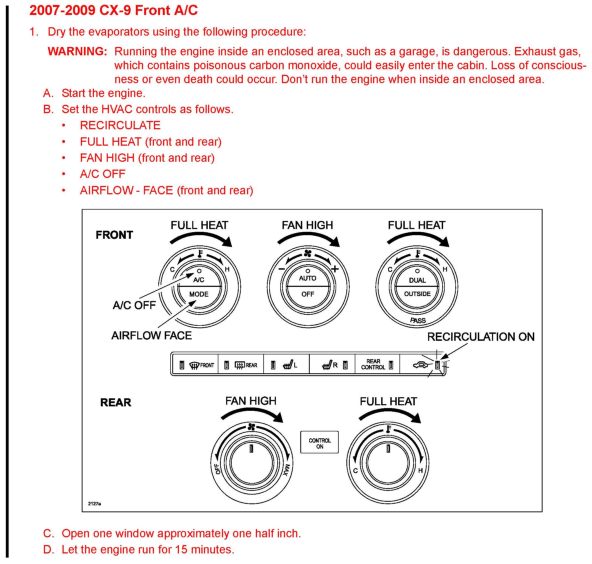
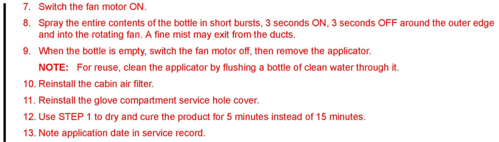
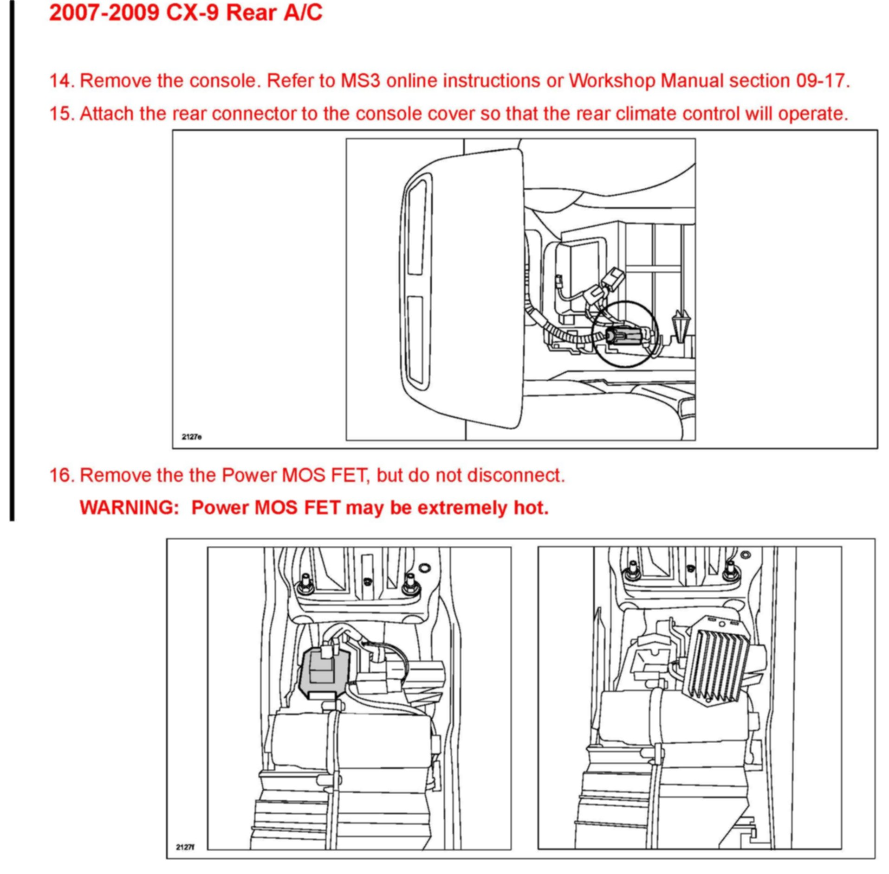
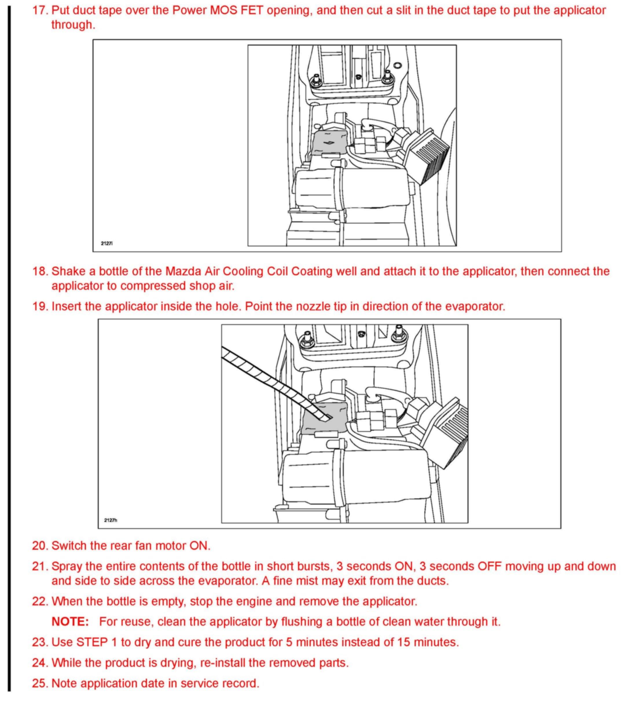

Operation CHARM
: Car repair manuals for everyone.
Home
>>
Mazda
>>
1999
>>
MX-5 Miata L4-1.8L DOHC
>>
Repair and Diagnosis
>>
Heating and Air Conditioning
>>
Evaporator Core
>>
Technical Service Bulletins
>>
Customer Interest
>>
A/C - Musty/Mildew Odors From vents
>>
Repair Procedures
>>
2007-2009 CX-9 Front A/C/2007-2009 CX-9 Rear A/C
2007-2009 CX-9 Front A/C/2007-2009 CX-9 Rear A/C
2007-2009 CX-9 FRONT A/C

Steps 1 - D
Steps 2 - 6

Steps 7 - 13
2007-2009 CX-9 REAR A/C

Steps 14 - 16

Steps 17 - 25